Learn How To Make Levels
By: Ped_Head
Please do not send any comments on this tutorial!
If you need help e-mail me Cloudstrife111@hotmail.com
To get the level editor go to www.darkjedi.com
Making a level in Jedi Knight seems quite easy. Well I hate to tell you this but, starting out its a little bit difficult and confusing and its hard. A few times I felt like I wanted to give it up and move onto something else. But I made this to have people learn how to make there own levels for Jedi Knight from scratch. I have been level editing for almost a year now and I know that everyone has there own simple basic technique of level editing. Some people like to do indoors and very boxy with a little bit of architecture. Or people like to make a canyon type of a level with lots turns and curves and good architecture.
Starting off tips
1. Have the game, Jedi Knight.
2. You have to have a mind that can see 3d.
3. If you don't get it move onto something else that is easier in Jed before starting the hard things such as (elevators, doors, frames.)
4. Have an idea of a level.
5. Important! You must have the editor called JED!
Table of Contents:
Chapter 1: Getting Started
Chapter 2: Tool Bar
Chapter 3: Cleaving
Chapter 4: Texturing
Chapter 5: Extruding
Chapter 6: Placing items and 3do's
Chapter 7: Adjoining
Chapter 1: Getting Started
Some people open Jed and they see this purple square and all these dots. And someone asks me a question. "Where do I start?" Well getting started out you see a purple square with dots. You can use the buttons - and + to zoom in and out on the grid.
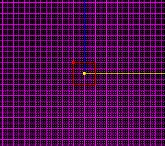
The purple square is called the grid. Its mostly mainly to measure and line sectors and surfaces up with it. Then you see a box in the middle. That is the sector (The sector is a room). You would not get anywhere without 1 sector in Jed. It all starts out with 1 sector. You can switch to views of the grid by holding down Shift on your keyboard and pressing 2, or 3 to do your type of side views. Also you can zoom in and out by pressing the keys - and +. You can duplicate the sector you have on your grid by moving the mouse where you want the sector and press the button insert on your keyboard. If you want to drag the sector so its meeting with another sector simply just have the sector selected and hold down ctrl and move it with your mouse. How you can tell the sector is selected is when its red. When the sector is not selected its just a plain white.
Chapter 2: The Tool Bar
The tool bar is found in Jed up in the upward left corner. And it should look like this. Just follow the numbers and the description of what they do and what are they down below
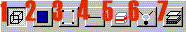
1. This one is your sector mode. If you don't know what a sector is its a room.
2. This is your Surface mode. You can texture walls with this and select which wall you want to extrude and you need this tool to adjoin.
3. This is your Vertex mode. This helps so you can make a sector bigger or more narrow. When you click on it, it shows the corners of your shape. You can drag the vertex's by holding down Ctrl and moving your mouse.
4. This is your Edge mode you can cleave (To know what cleaving is go to chapter 3) the surface of a wall and make a new edge. I use this rarely.
5. This is Thing Mode. Thing mode is where you can place down 3do's. Such as chairs, tables, guns and other things. To level out the 3do and have the height you want just switch to side view (look at chapter 1 on views) and simply just have the object selected and hold down ctrl and drag the height you want it to be.
6. Now this is light mode. It makes your level look better in JED. This is kind of like the object 3do but you get to select how bright you want your light in a level.
7. Frame mode. You can do frames in your level with this object.
Chapter 3: Cleaving
Cleaving is an important thing in Jed. Cleaving is one of the main tools I use the most out of anything in JED. To bring up your cleaver press C on your keyboard and it appears to be a saber. You can use cleaving to Cleave on a side of a wall to extrude (See chapter 4 on extruding) a hall way. Or you can use cleaving as cleaving a part of a sector and delete the end off. You can use cleaving as making different shapes and sizes. Cleaving you can make walls curve and after that click on the remains and delete them off.
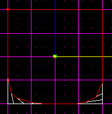
It should look like this once you delete the remains of the sector off.
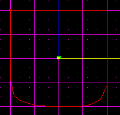
Another important thing in Cleaving is that you can cleave at the very end of a sector.
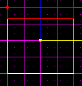
Look at the picture to see. once you have cleaved across the sector have the end of the sector highlighted like the picture.
Once its highlighted hold down ctrl and move your mouse. What your doing is dragging the sector and expanding it out more. This should make your sector wider and longer.
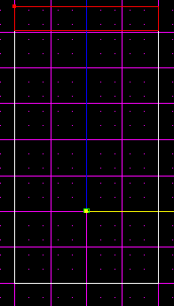
Chapter 4: Texturing
Texturing is when you make your level have detail. To texture walls go into tools and click on 3d preview.
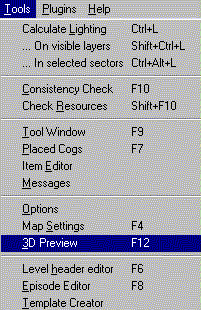
This is what 3d preview should look like.
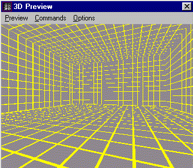
Texturing is easy, just take your mouse and double click on one of the yellow and gray walls. To move around in 3d preview use your arrows to back, forward, sideways, and to move upwards and down use key letters A and Z. This way you can choose your texture. Make sure the ceilings and ground have textures in the level. Once you have done that your level should have texture!
Chapter 5: Extruding
Extruding is when you click on a surface and you press X and you make the sector go out farther. But you must be in Surface mode (go to chapter 2 to know what surface mode is) Go into 3d preview and once you are in 3d preview click on a wall. Go to your main Jed grid and switch to side mode by holding down shift and pressing views 2 or 3. Once you have done that cleave on the surface of what you want to extrude. Cleave the height of how tall you want to extrude a part of a the sector and how wide you want to extrude.
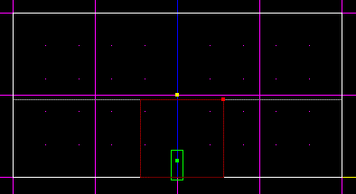
Once you have the part of the wall you have cleaved out press X and you will see that the side of the sector has been expanded out.
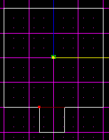
Chapter 6: Placing Weapons and 3do's
Placing 3do's is very easy. First thing you do you go to your tool bar (to know what the tool bar is go to chapter 2) and click on thing mode (looks like a red and white box) once you click on thing mode move your mouse where you want to place the thing and press insert on your keyboard. If you place an item and its bigger than the sector you might want to make a bigger sector (go to chapter 3 to see how to make a bigger sector)Once you place your item it should look like this in Jed.
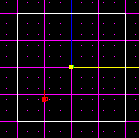
Once you do that press enter once the item you have placed is selected. When you press enter you should receive another window that looks like this
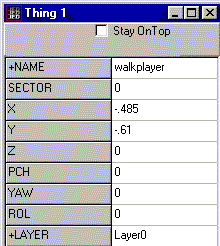
When you see a window like this the name of the 3do is called walkplayer. Walkplayer is an item that you place in a level and that is where you start out in the level. You can change the walkplayer by double clicking on the word called walkplayer. Once you have done that you shall see a list of all types of 3do's.
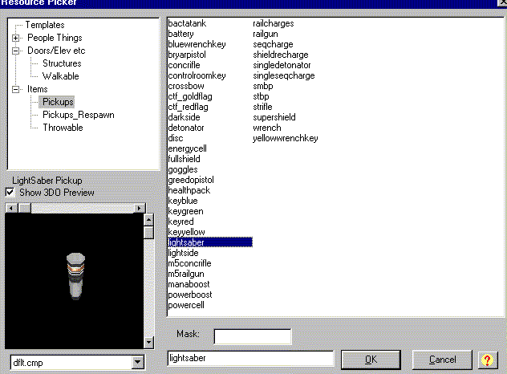
When you see this window you can select what item you want to place either you could place an item that you can pick up in the game or you can place down a 3do such as a bed.
When you have your item picked press OK. Now the next part, once you have pressed Ok you are back at your main Jed Screen. To pick the height of how high you want your 3do switch to side view and you will see side ways of the sector and the 3do. You may move the item up and down by holding ctrl and moving the mouse when you are in side view.
This way you choose how high you want your item to be.
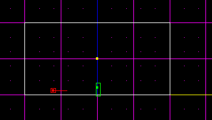
After you have done that you can go into 3d preview and you shall see your item you have placed. To find 3d preview go into tools.
Chapter 6: Adjoining
Adjoining is when you make a hallway connecting to a room or a small room connected too a larger room. Adjoining is a part in Jed that you have to know how to do it or you can't get really far in Jed. Okay, lets start out with a hall way. Look at the picture.
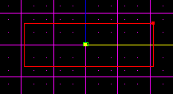
When you have your hallway you want to have another sector to adjoin to the end of the hall way. So now create a new sector by pressing the letter K on your keyboard. Now hold down your mouse button and drag a straight line. Once you do that be sure to line the sector up to the hall way exactly.
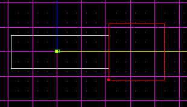
Now click on surface mode ( To need to know what surface mode is go to Chapter 2) When you click on surface mode be sure to click on the big sector and press N until you get the surface wall that is facing the hall way. Look at the picture down below.
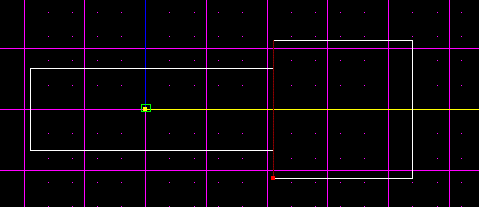
Once you have the surface selected that is right next to the hallway switch to side view by holding down shift and pressing buttons 2 or 3 until you see the surface of the wall like this.
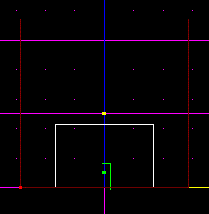
Okay this part is a bit confusing but listen closely. Press C to take out your cleaver (if you don't know what cleaving is go to chapter 3) Now once you have your cleaver out cleave on the exact lines as the hall way. Remember you can zoom in and out by pressing buttons - or +
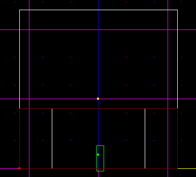
Once you are finished cleaving or the exact lines as the other sector it should look like this.
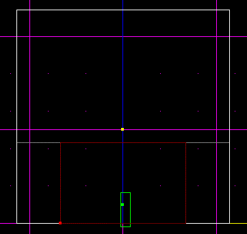
When you are finished and you are finished cleaving and you have the surface you have cleaved press the letter A on your keyboard once. This should make it so you can see from the hall way to the big sector.
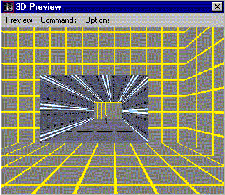